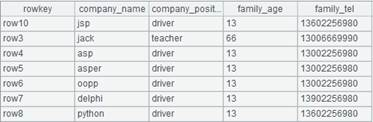

Description:
Attach a computation that adds one or more fields to a channel and return the original channel.
Syntax:
ch.derive(xi :Fi,…)
Note:
The function attaches a computation to channel ch, which will compute expression xi on each of its records and assign the reuslts to the new field Fi, and return the original channel containing its original fields and the new field(s) Fi,….
This is an attachment computation.
Parameter:
|
ch |
A channel |
|
Fi |
Field name, which shouldn’t be same as one of the existing ones |
|
xi |
An expression, whose results will be the values of the new fields |
Option:
|
@i |
Won’t generate a corresponding record if there is expression xi and its result is null |
Return value:
Channel
Example:
|
|
A |
|
|
1 |
=demo.cursor("select NAME,BIRTHDAY,HIREDATE from Employee") |
|
|
2 |
=file("D:\\txt_files\\data1.txt").cursor@t() |
Below is data1.txt：  |
|
3 |
=channel() |
Create a channel. |
|
4 |
=channel() |
Create a channel. |
|
5 |
=A3.derive(interval@y(BIRTHDAY,HIREDATE):EntryAge, age(HIREDATE):WorkAge) |
Attach a computation to channel A3, which will add EntryAge field and WorkAge field to it, and return the original channel. |
|
6 |
=A3.fetch() |
Execute the result set function in channel A3 and keep the current data in channel. |
|
7 |
=A4.derive@i(SCORE:score_not_null) |
Attach a computation to channel A3, which won’t genearate the corresponding record if a SCORE value is null. |
|
8 |
=A4.fetch() |
Execute the result set function in channel A4 and keep the current data in channel. |
|
9 |
=A1.push(A3) |
Be ready to push A1’s data into A3’s channel, but the action needs to wait. |
|
10 |
=A2.push(A4) |
Be ready to push A2’s data into A4’s channel, but the action needs to wait. |
|
11 |
=A1.skip() |
Fetch data from cursor A1 while pushing data into channel A3 to execute the attached computation and keep the result. |
|
12 |
=A2.fetch() |
Fetch data from cursor A2 while pushing data into channel A4 to execute the attached computation and keep the result. |
|
13 |
=A3.result() |
Get channel A3’s result:
|
|
14 |
=A4.result() |
Get channel A4’s result:
|